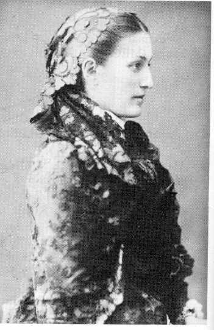
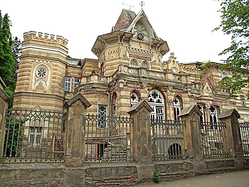
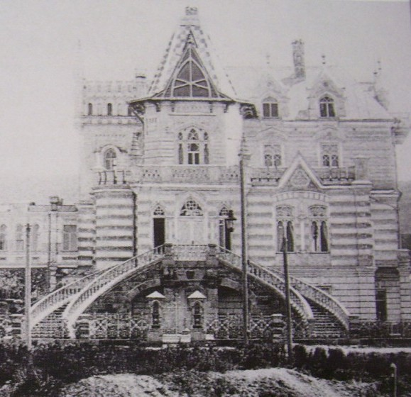

Страницы авторов "Тёмного леса"
Пишите нам! temnyjles@narod.ru
Чем больше изучаешь историю Кисловодска, тем больше возникает вопросов, на которые пока еще нет ответа. Иногда новые вопросы приходят оттуда, откуда их совсем не ждешь. Вот и мне недавно пришло письмо из далекого Брюсселя от бельгийской писательницы Мари Тегюль. Внучка француза, эмигрировавшего из России, потомок (по материнской линии) знаменитого рыцаря-крестоносца Готфрида Бульонского, она занимается сейчас литературной деятельностью, пишет романы и повести о жизни русской аристократии в дореволюционной России (Мари Тегюль скончалась в конце 2010 г. - прим. авт.). Особенно ее интересует Кавказ, поскольку дед Мари жил некогда в Тифлисе. Познакомившись с некоторыми из моих статей в интернете, она поинтересовалась: не знаю ли я что-нибудь о графине Агриппине (Аграфене) фон Зарнекау, которая окончила свои дни в Кисловодске. Тем самым Мари приоткрыла для меня новую, еще не известную страницу Кисловодской истории.
Во второй половине XIX века одной из самых красивых женщин города Кутаиса была дочь грузинского дворянина Аграфена Джапаридзе. Совсем еще юной она стала женой князя Тариела Дадиани. Однажды на театрализованном представлении, устроенном местными аристократами, молодую княгиню увидел правнук императора Павла I, принц Константин Петрович Ольденбургский (родной брат Александра Ольденбургского, который основал курорт в Гаграх и инспектировал госпитали Пятигорска и Кисловодска в Первую мировую войну). Принц решил, во что бы то ни стало, жениться на Аграфене Дадиани. Чувства были взаимными и в 1882 году молодые обвенчались. Поговаривали, что Константин Петрович заплатил Тариелу Дадиани огромный "выкуп" за красавицу-жену. Однако это в точности не известно. С уверенностью можно сказать, что Аграфена и принц Ольденбургский прожили более 20 счастливых лет, пока смерть Константина Петровича в 1906 году в Ницце не разлучила их. Брак их считал -
ся морганатическим и лишил Константина права на престол герцогства Ольденбург. Однако его отец любезно принял Аграфену в круг своих родных и даже придумал для нее и детей, которых она родила принцу, специальный титул графов фон Зарнекау. У Аграфены и Константина Петровича всего было шестеро детей: Александра, Екатерина, Николай, Алексей, Петр и Нина.
Когда в России произошли революционные события, а затем началась гражданская война, четверо детей графини Зарнекау эмигрировали из страны, где каждый из них прожил достаточно долгую жизнь. Только средний сын Алексей умер в 1918 году весьма молодым. А еще в России оставалась младшая дочь Нина, страдавшая психическим заболеванием. Граф С.Ю. Витте в свое время довольно жестоко называл ее "полуидиоткой". Аграфена не могла бросить свою больную дочь, а выехать с ней за границу тоже не могла. Нина находилась на излечении в частной лечебнице в Кисловодске (местонахождение ее не установлено), где и скончалась в 1922 году в возрасте 30 лет. Пожилая графиня (ей было уже 67 лет) не смогла перебраться к детям за рубеж, поскольку все пути на Запад были закрыты. Сложно сказать, как она прожила последние годы жизни в Кисловодске, насколько ей приходилось скрывать свое происхождение и историю своей жизни. Даже дата ее смерти различается в разных источниках. Называют то 18 октября 1926 года, то 1927, а иногда и 1929 год. Только лишь место смерти указано одно и то же: "Кисловодск" (По информации, полученной от директора Грузинского государственного музея музыки, театра, кино и хореографии, профессора Георгия Каландия, графиня умерла в г. Кутаиси - прим. авт.).
И еще одна загадка, на сей раз архитектурная. В Кисловодске есть красивый особняк, в котором расположен сейчас пансионат "Звездный". По мнению краеведов - это дача, построенная в начале XX века архитектором Э.Б. Ходжаевым по заказу пятигорского купца Г.В. Александрова. К 1910 году она уже принадлежала ростовскому купцу М.О. Кулакову, а затем была продана бакинскому нефтепромышленнику М. Мухтарову. Что интересно, особняк этот очень похож на дворец в Тифлисе, построенный в 1895 году по проекту архитектора Павла Штерна, который К.П. Ольденбургский подарил своей горячо любимой супруге (теперь Дворец Искусства в Тбилиси). Не только планировка здания, но даже второстепенные архитектурные детали кисловодского "дворца Мухтарова" повторяют облик тифлисского дворца Зарнекау. Случайно ли это совпадение?
  
Аграфена Зарнекау Дворец искусства в Тбилиси Дворец Мухтарова в Кисловодске (фото начала XX века)
Вячеслав Яновский. Неакадемические сочинения